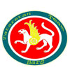
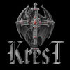
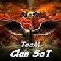

Это реконструированный сайт topw3.narod.ru | Харьков 2005-2007


Результаты турниров за весну 2007
1.Heroes 5:Kharkov part
Дата проведения: 2.06.2007
Место проведения: к.к. "Centurion"
Участвовавшие игроки ТоР-а: Gannibal
Количество участников:19
Результаты турнира:
1-е местo: sw.Invisible
2-е место: ToP)Gannibal.sw
3-е место: sw.DarkHunter
4-е место: un.-Wolf
2. NLKI Intel Chelleng: №1 amatory qualification

Дата проведения: 3.06.2007
Место проведения: к.к. "Бездна"
Участвовавшие игроки ТоР-а: Exe, Diablo, Tema, Fist
Количество участников: 14
Результаты турнира:
Квоты: ToP)Exe (по виннерам)
DNI.Imba-elf (по виннерам)
ToP)Diablo (по лузерам)
ToP)TEma (по лузерам)
3. ToP--vs--PFM
 --vs--
--vs--
Дата проведения: 07.06.2007
Место проведения: евро ладдер battle.net канал clan PFM
Участвовавшие игроки ТоР-а: ot100u, Diablo, Exe
Результаты:
 ToP)Adoveov—[2:1]—
ToP)Adoveov—[2:1]— 50.frank
50.frank ToP)Diablo—[2:0]—c1q3ToP)Exe—[2:0]—
ToP)Diablo—[2:0]—c1q3ToP)Exe—[2:0]— master(max)
master(max)4. NLKI Intel Chelleng: professionals qualification
Дата проведения: 9.06.2007
Место проведения: к.к. "ИМперия"
Участвовавшие игроки ТоР-а: Gannibal
Количество участников: 3
Результаты турнира:
1-е место: ToP)Gannibal.sw
2-е место: Roppy
3-е место: Svalbard
5. NLKI Intel Chelleng: №2 amatory qualification
Дата проведения: 10.06.2007
Место проведения: к.к. "Бездна"
Участвовавшие игроки ТоР-а: Fist
Количество участников: 8
Результаты турнира:
Квоты: Dimas (по виннерам)
Skif (по виннерам)
ToP)Fist (по лузерам)
Brutal (по лузерам)
6. ToP--vs--XZ-b
--vs--Дата проведения: 19.06.2007
Место проведения: gg client
Участвовавшие игроки ТоР-а: Diablo, Fist, Adoveov
Результаты:
ToP)Adoveov—[0:2]—xz-b.ViniToP)Diablo—[0:2]—xz-B.DuranToP)Fist—[2:0]—xz-b.OverDiablo+Fist)—[0:2]—xz-B (Drug+Duran)7. ToP--vs--BARS
--vs--
Дата проведения: 24.06.2007
Место проведения: gg client
Участвовавшие игроки ТоР-а: Diablo, Fist, Tema
Результаты:
ToP)Tema—[2:0]—bars.PredatorToP)Fist—[0:2]—bars.DesidentToP)Diablo—[1:2]—bars.LizardDiablo+Fist)—[0:2]—bars (Gansay+Predator)7. ToP--vs--NAVI
--vs--
Дата проведения: 29.06.2007
Место проведения: gg client
Участвовавшие игроки ТоР-а: Diablo, Exe, Tema
Результаты:
ToP)Diablo—[2:0]—navi.YastenToP)Tema—[2:0]—navi.AlexToP)Exe—[2:1]—navi.Glorian8. NLKI Intel Chelleng: финал аматорских отборочных в Харькове
Дата проведения: 07.2007
Место проведения: к.к. "Адреналин"
Участвовавшие игроки ТоР-а: Exe, Fist
Количество участников: 14
Результаты турнира:
1-е место: Snake (квота в финал аматорской серии)
2-е место: DNI.Imba-elf (квота в финал аматорской серии)
3-е место: ToP)Fist (квота в финал аматорской серии)
4-е место: ToP)Ехе
9. WCG 2007: Донецкие отборочные

Дата проведения: 15.07.2007
Место проведения: к.к. "КиберАрена" (г.Донецк)
Участвовавшие игроки ТоР-а: Exe, Gannibal
Количество участников: 22
Результаты турнира:
1-е место: egp.tt.Sonik (квота на финал в Киев)
2-е место: ToP)Exe (квота на финал в Киев)
3-е место: BB.CtpaxoB
4-е место: Wolverine
10. NLKI Intel Chelleng: финал профессиональной серии
Дата проведения: 21.07.2007
Место проведения: к.к. "КиберспортАрена"
Участвовавшие игроки ТоР-а: Gannibal
Количество участников: 10
Результаты турнира:
1-е место: srs.Fix.c-club
2-е место: TRh.c-club
3-е место: SK.Hot.c-club
4-е место: knet.Myrik
11. WCG 2007: Днепропетровские отборочные
Дата проведения: 22.07.2007
Место проведения: к.к. "Дафи" (г.Донецк)
Участвовавшие игроки ТоР-а: noobkiller, BUCH
Количество участников: 22
Результаты турнира:
1-е место: Fors)warrior (квота на финал в Киев)
2-е место: eGptt.faStClick (квота на финал в Киев)
3-е место: PSIH
4-е место: HR.DooMGuard
12. ToP--vs--KREST
--vs--
Дата проведения: 16.07.2007
Место проведения: gg client
Участвовавшие игроки ТоР-а: Exe, Fist
Результаты:
ToP)Exe—[2:1]—KreS.NoFearExe+Fist)—[1:0]—KREST (NoFear+ownzAll)13. ToP--vs--SaT
--vs--
Дата проведения: 24.07.2007
Место проведения: gg client
Участвовавшие игроки ТоР-а: Exe, Buch
Результаты:
ToP)Exe—[2:0]—SaT.HaPKOMaHToP)Buch—[2:0]—sat.ctomatolog14. ToP--vs--Post
--vs--Дата проведения: 26.07.2007
Место проведения: gg client/battle.net
Участвовавшие игроки ТоР-а: Exe, noobkiler, Diablo
Результаты:
15. WCG 2007: Харьковские отборочные
Дата проведения: 12.07.2007
Место проведения: к.к. "Poligon"
Участвовавшие игроки ТоР-а: Diablo, Fist, Tema
Количество участников: 28
Результаты турнира:
1-е место: 2EZ.Snake (квота на финал в Киев)
2-е место: knet.Myric (квота на финал в Киев)
3-е место: c-club.V3nus
4-е место: Dimas
16. WCG 2007: национальный финал
Дата проведения: 17-18.07.2007
Место проведения: "Украинский дом" (г. Киев)
Участвовавшие игроки ТоР-а: Ехе
Количество участников: 16
Результаты турнира:
1-е место: Sk.Hot.c-club (квота на финал чемпионата мира)
2-е место: racoons.Sonik (квота на финал чемпионата мира)
3-е место: cpro.Ghost
4-е место: knet.Majestick
ToP)Exe—[2:1]—viva4ever
ToP)Noobkiller—[2:0]—nissiToP)Diablo—[2:0]—post.Awe17. ToP--vs--FA
--vs--Дата проведения: 26.08.2007
Место проведения: gg client
Участвовавшие игроки ТоР-а: Fist, Buch, Exe, Tema
Результаты:
ToP)Fist—[2:1]—fa.BrezzyToP)Tema—[2:1]—fa.Ne_aToP)Exe—[2:0]—Fa.SealiqudToP)Buch—[2:0]—Fa.KlepaАрхив отчетов за весну 2007 г.